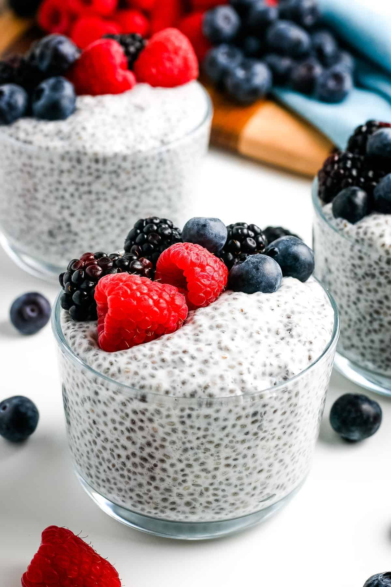

Chia Pudding

Chia pudding is the perfect healthy breakfast or snack to meal prep for the week. It’s creamy, satisfying and loaded with protein, fiber and omega-3s. Vegan, gluten-free, paleo and keto.
Ingredients
- 4 Tablespoons chia seeds
- 1 cup of almond milk
- 1/2 Tablespoon maple syrup, honey or sweetener of choice
- 1/4 teaspoon vanilla extract, optional
- Toppings of choice: fresh berries or other fruit, granola, nut butter, etc
Steps
- In a bowl or mason jar, stir together chia seeds, milk, maple syrup and vanilla, if using. If you’re using a mason jar, you can put the lid on and shake the mixture to combine everything.
- Once the chia pudding mixture is well combined, let it sit for 5 minutes, give it another stir/shake to break up any clumps of chia seeds, cover and put the mixture in the fridge to “set" for 1-2 hours or overnight. The chia pudding should be nice and thick, not liquidy. If it's not thick enough, just add more chia seeds (about 1 Tablespoon), stir and refrigerate for another 30 minutes or so.
- Chia pudding can be stored for up to 5-7 days in an airtight container in the refrigerator.